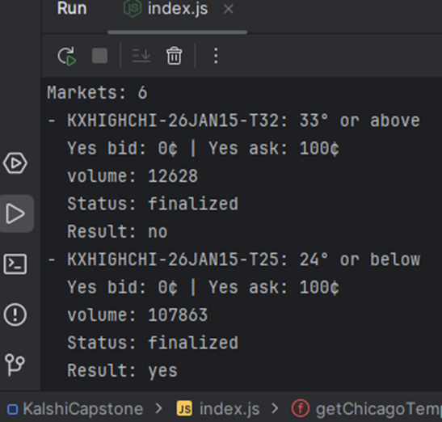
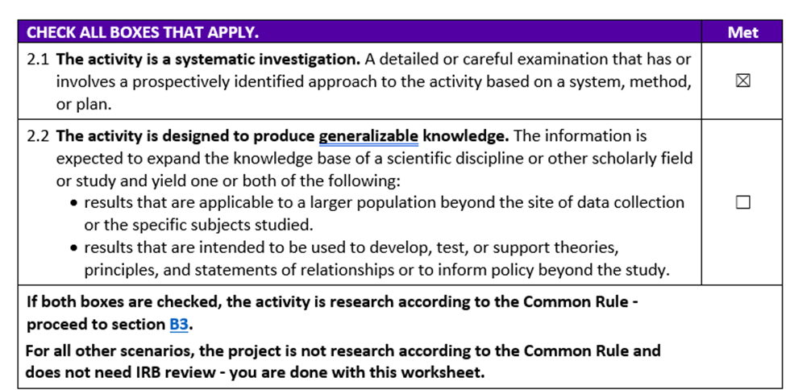
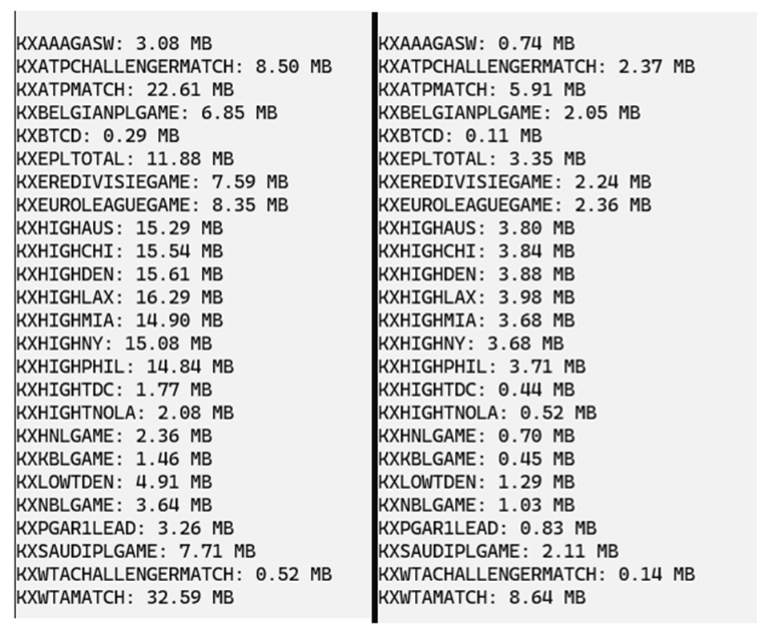
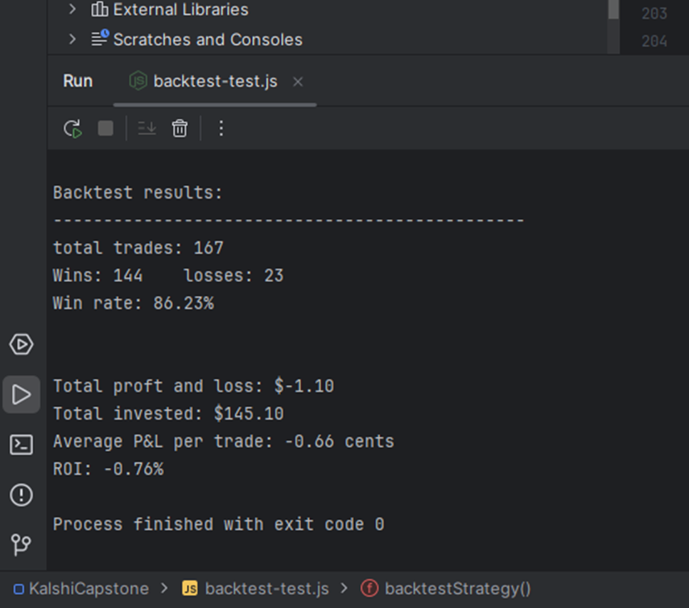
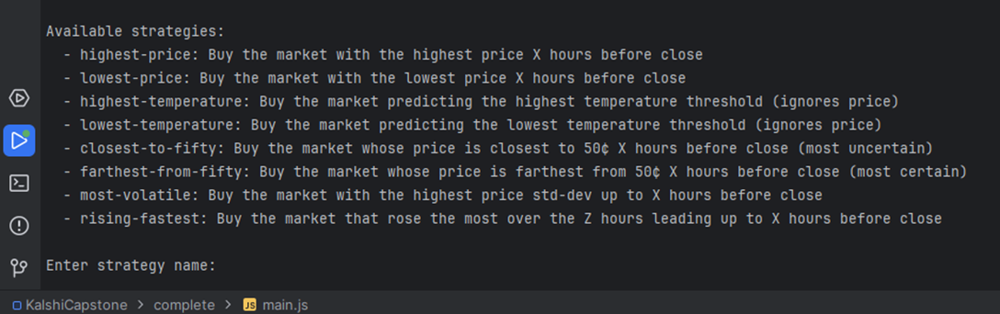

Capstone Experience
This page walks through how the project was built. The decisions I made, the things that didn't work, and how the system evolved from a single API call into a fully functional backtesting suite with a visual interface.
Data Source & API
The first task before any strategy logic could be written was picking a prediction market and getting historical data out of it. Polymarket allows limited U.S. usage, so Kalshi was the obvious next choice. Temperature markets were a natural fit: they run daily, settle cleanly, and the New York peak temperature series (KXHIGHNY) had daily volume in the hundreds of thousands per day. High enough to make strategy comparisons meaningful, so it was chosen as a starting point.
Figure 1 shows the Chicago series, the first one I explored. Authentication wasn't required yet for basic market metadata at this stage, and some fields were still being misread. Each day's markets are structured as a set of threshold markets: "will the high temperature be 33° or above?", "will it be 35° or above?", and so on. One of them resolves yes, the rest resolve no. The finalized yes_bid of 0¢ and yes_ask of 100¢ visible here is a tell: once a contract settles, the bid/ask goes to either 0¢ or 100¢. That detail took some time to correctly interpret.

Pulling the candlestick history (the per-minute price data needed to actually backtest anything), required an authenticated API connection. Kalshi uses RSA asymmetric signing rather than a standard API key. Every single request has to include a live-generated signature: the current timestamp, HTTP method, and endpoint path are combined into a message string, then signed with a private RSA key using SHA-256. Having never worked with RSA cryptography before, this was the steepest learning curve in the project.
This complexity also killed a planned feature: letting users input their own markets or series into the application. Implementing that would have required either exposing the RSA private key in the client-side code or building a backend server to proxy the API requests. A backend would have roughly doubled the project's scope for a single bonus feature so I cut the feature.
Human Subjects Research Determination
Early in the project, my instructor raised the question of whether my project constituted human subjects research and if IRB review might be required. I completed the university's Human Subjects Research Determination Worksheet to find out. The key question is Section 2.2, visible in Figure 2: 'is the project designed to expand the knowledge base of a scientific discipline or other scholarly field?'

This project is a self-contained engineering tool. It tests strategies on a specific dataset and draws no conclusions beyond its own scope. I did not check Section 2.2, which meant the project did not qualify as human subjects research and no IRB review was needed.
Data Storage
Connecting the interface to real data surfaced another constraint: there is no backend, so the market data has to ship with the app. The raw downloaded candlesticks from Kalshi (25 series, 100+ days each, per-minute candlestick data) came in at 7.8 GB. GitHub's repo size limit is 100 MB so some cuts had to happen.
The reductions happened in stages. First, I resampled candlestick intervals from 1 minute to 15 minutes. Per-minute precision was never needed for simple strategies. Second, all unused fields were stripped. Only the timestamp, close price, bid, ask, and interval volume were kept. That brought the total down to 237 MB.
At this point I tested SQLite as an alternative storage format, expecting that a database would be optimized for exactly this kind of retrieval. It was not. SQLite storage came in about 50% smaller than the JSON at that stage, but retrieval was around 15% slower. Since retrieval speed was the actual bottleneck (the backtest itself took about a tenth of the time that data retrieval took) I ruled out SQLite.
Figure 3 shows the before and after data sizes across all series after the final compression step. The left column shows the second stage of data: compressed but still using named JSON fields. The right shows the last stage, where candlestick objects were replaced with the smallest arrays.

The final step was removing the field-name keys entirely. Since candlestick data always appears in a fixed order the keys are redundant. Empty candlestick intervals were filled with null values to preserve the structure. Encoding them as bare arrays like [1705363200, 45, 44, 46, 120] instead of {"ts":1705363200,"p":45,"b":44,"a":46,"v":120} saved an average of 70% per series. The full dataset landed at 62 MB, well under the GitHub limit, with average retrieval times around 50 ms.
Strategy Engine
With authentication working and 167 days of New York temperature market data downloaded, I tested the first strategy: buy the market with the highest price 8 hours before market close. The strategy is simple: the highest-priced contract is the crowd's consensus pick, the most likely outcome. Over 167 trades, that was right 86% of the time.
Figure 4 shows the console output from that first run. The results (167 trades, 86.23% win rate, −$1.10 total P&L) show that the loss is not a bug.

It's a demonstration of how prediction markets are priced; winning 86% of the time only breaks even if the average winning payout offsets the losses. An ROI of −0.76% is actually really close to being a positive strategy. Any strategy worth using needs to beat it.
With a baseline established, I expanded the backtesting engine from two strategies into eight. The initial pair of buy highest price and buy lowest price were joined by six more, each testing a different hypothesis. Figure 5 shows the complete suite as it appears in the CLI.

Eight different options, most of them accepting a user-defined hours parameter. Closest-to-fifty targets the most uncertain market, the one the crowd is least sure about. Farthest-from-fifty does the opposite, betting with whoever the crowd considers most certain. Most-volatile looks for the market whose price has been swinging the most in the hours leading up to entry. Rising-fastest is a momentum strategy: it finds whichever market gained the most price over a custom lookback window and bets that the trend continues.
With eight strategies, roughly 30 available series, and an open-ended parameter on most strategies, the system offers hundreds of distinct configurations to explore.
Interface & Visualization
After presenting my progress at Showcase 0 and 1, it became clear that most audience members did not know what prediction markets were, and the console output conveyed too little information. I used Figma to prototype the layout before any frontend code was written, using the real numbers from the first backtest as the content.
The two charts in Figure 6 were not in the original plan. I added them after recognizing that the headline numbers didn't tell the full story. Without the portfolio chart, a reader can't see that the strategy was actually positive for most of the period before declining at the end. The weekly returns chart also adds information: it shows whether losses were concentrated in a short stretch or spread across the whole period.

The mockup locked in the layout before implementation began, which prevented scope creep later. I then translated the Figma design into working frontend code and wired it to the backtesting engine.